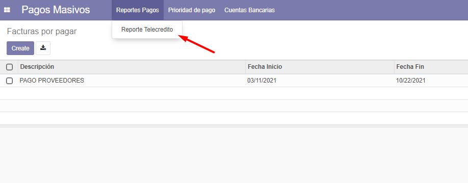
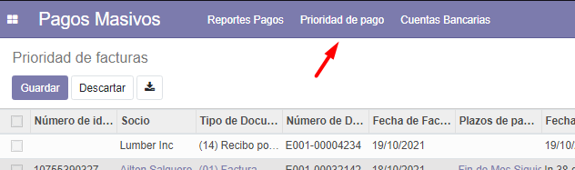
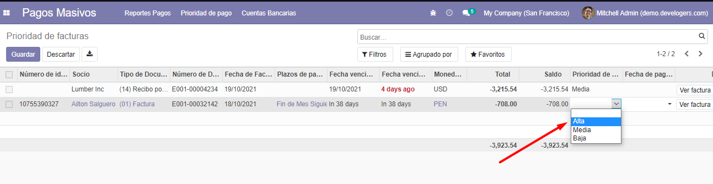
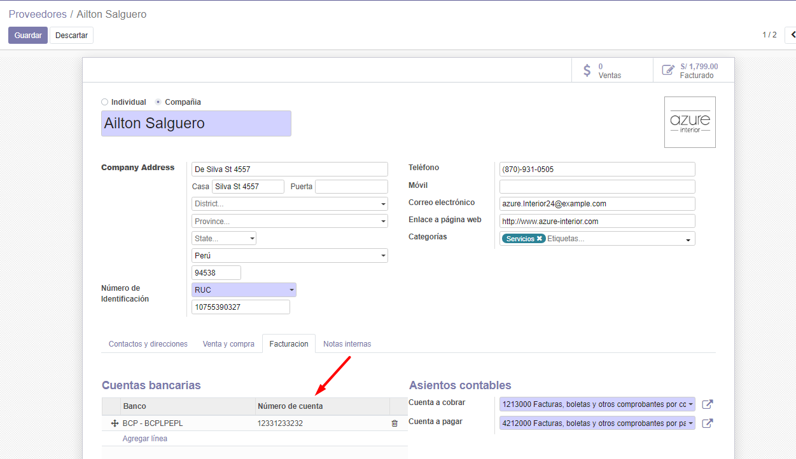
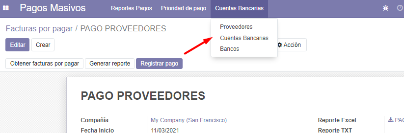
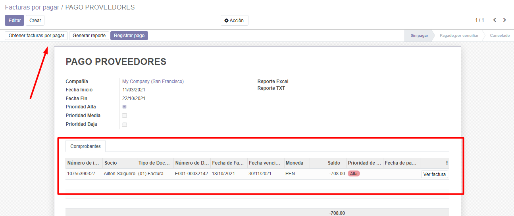
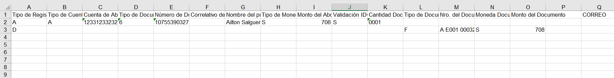

1. Vamos al menú de Pagos Masivos.

2. Creamos un reporte de pagos Telecredito.

3. Vamos al menú de prioridad de pagos.

4. Asignamos una prioridad de pago a las facturas perndientes.

5. Configuramos la cuenta contable del proveedor.

6. Vamos al menu de cuentas bancarias.

7. Configuramos la cuenta contable con el tipo de cuenta bancaria.
8. Obtenemos las facturas pendientes por pagar.

9. Generamos y descargamos el reporte.
